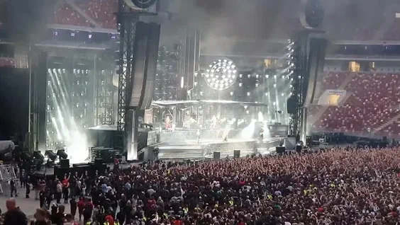
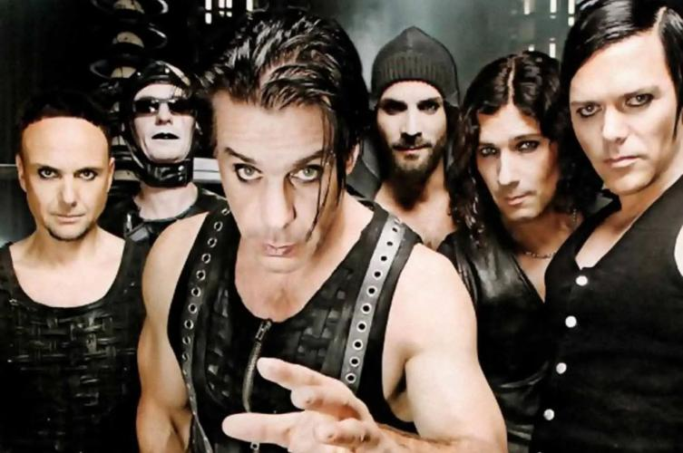

Про групу
Rammstein — німецький індастріал-метал гурт, заснований у 1994 році в Берліні. Відомий своїми вражаючими концертними шоу з піротехнікою та провокаційними текстами.
 Дискографія
Нижче наведена таблиця з найвідомішими альбомами:
| Альбом | Рік виходу |
|---|---|
| Herzeleid | 1995 |
| Sehnsucht | 1997 |
| Mutter | 2001 |
| Reise, Reise | 2004 |
| Liebe ist für alle da | 2009 |
| Rammstein | 2019 |
| Zeit | 2022 |
Медіаконтент
Відео
Аудіо
Слухати Rammstein онлайн: Spotify ®
Цікаві факти
- Група була заснована у Берліні.
- Їх концерти відомі масштабними піротехнічними шоу.
- Назва походить від міста Рамштайн (Ramstein-Miesenbach).
Нумерований список популярних пісень
- Du Hast
- Sonne
- Ich Will
- Deutschland
- Mein Teil